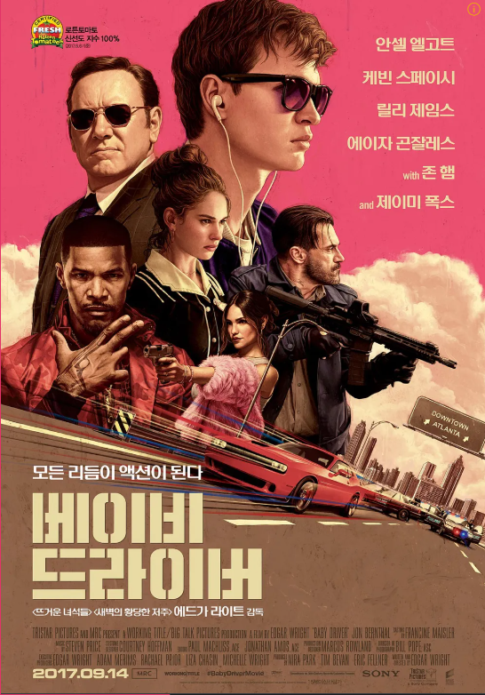

인생 영화

에드거 라이트 감독이 연출하고 안셀 엘고트가 주연으로 출연하는 영화 「베이비 드라이버」는 강도단의 리더인 '박사' 밑에서 전속 도주 드라이버로 일하고 있는 베이비는 어릴 적의 사고로 생긴 청각장애 때문에 생기는 이명을 없애기 위해 항상 아이팟과 이어폰을 가지고 다니며 음악에 심취해 있다.핸디캡에도 불구하고 타의 추종을 불허하는 최고의 드라이버 베이비는 박사에게 진 빚을 모두 청산한 후 우연히 만난 운명의 상대인 데보라와 도시를 떠나기로 한다. 하지만 베이비의 재능을 계속 이용하고 싶은 박사의 협박으로 다시 범죄에 뛰어드는데...이하 생략
예고편은 봤던가..? 혼자 영화관에 들렸을 때, 포스터만 보고 아무 생각 없이 골랐던 영화이다. 그리고 아무 생각 없이 즐기고 영화관을 나왔다. 계속 고민하고, 돌아봐야하는 진지한 예술 영화도 아닌, 킬링 타임용 영화이다. 그러나 영화 상영시간을 넘어 집에 가는 시간까지, 어쩌면 지금도 떠올릴 수 있는 시원함을 깊이 남겨줬다.